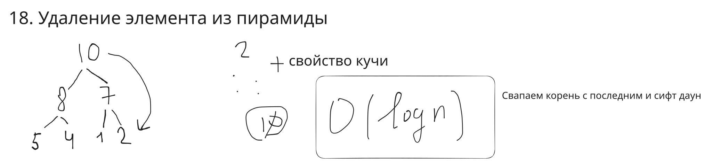

18. Удаление элемента из кучи
Теория, примеры и иллюстрации по теме.
Материалы и примеры по пунктам
Удаление элемента из пирамиды
свойство кучи
Поменяйте корень с последним элементом и выполните просеивание вниз.
Схемы и рукописные примеры
